Territories, compartments, domains and loops: how they form, how we see them, and what they do
Epigenetics
About this lecture
The marks and peaks of the earlier units are one-dimensional: a position on a chromosome. But an enhancer can sit hundreds of kilobases from the gene it controls. This lecture is about how the genome is folded in the nucleus, and how that folding is measured.
The levels of folding: territories, A/B compartments, domains (TADs) and loops, all in real GM12878 Hi-C data.
The two mechanisms behind them: loop extrusion by cohesin, stopped by CTCF, and compartmentalisation of like with like.
What happens when CTCF or cohesin is removed.
Imaging single cells versus Hi-C on millions of cells; the 3C family of assays.
What folding means for genes: enhancer–promoter contact, and disease when a domain boundary breaks.
Why folding matters
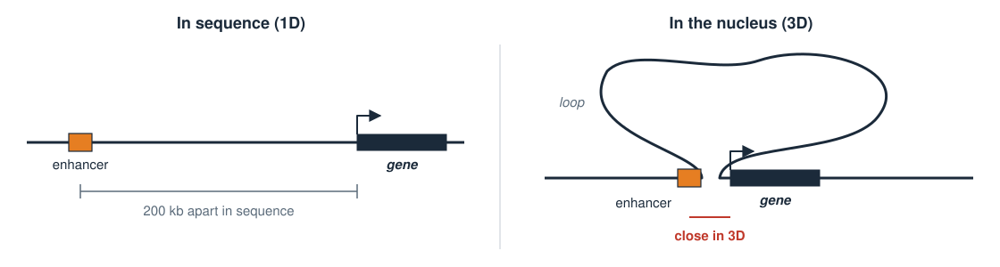
Enhancers often lie 10 kb to 1 Mb from the promoter they regulate, and often skip the nearest gene.
To act, an enhancer must (at least transiently) come close in 3D to its promoter.
So the questions are: what brings regions together, what keeps them apart, and how do we measure it?
Folding at many scales
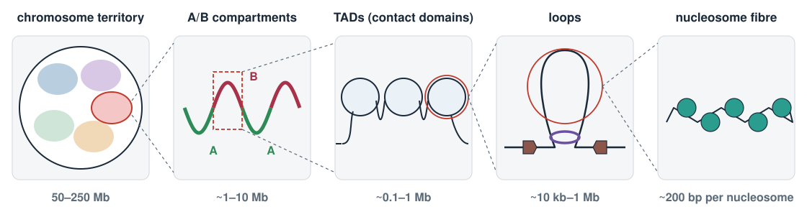
Territories: each chromosome occupies its own region of the nucleus.
Compartments (Mb): active (A) and inactive (B) chromatin segregate.
Domains / TADs (~0.1–1 Mb) and loops (~10 kb–1 Mb): local units made by cohesin and CTCF.
Nucleosome fibre: the 10-nm fibre of What is epigenetics?; the textbook 30-nm fibre is rare in living cells.
Chromosome territories
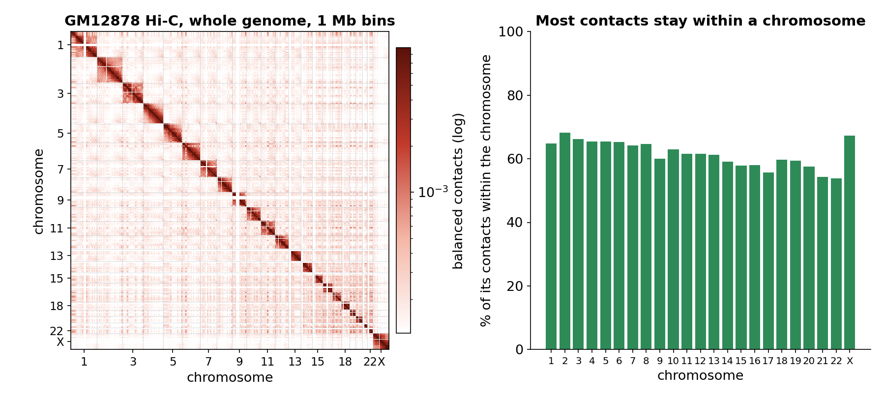
Each chromosome is a block on the diagonal: contacts within a chromosome far outnumber contacts between chromosomes.
In GM12878, 77% of contacts are within a chromosome, although only 5% of all pairs of positions are.
Small, gene-rich chromosomes (16, 17, 19, 20, 22) contact each other more and keep a smaller share of contacts to themselves: they sit together in the nuclear interior.
Reading a Hi-C map
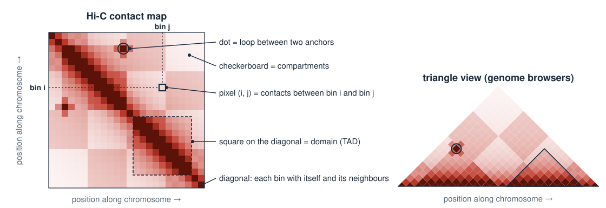
Both axes are the genome. Pixel (i, j) = how often bin i and bin j were found ligated together, summed over millions of cells.
The map is symmetric; browsers often show only the upper triangle, turned 45°.
Three patterns to look for: squares on the diagonal (domains), dots off the diagonal (loops), a checkerboard far from the diagonal (compartments).
Contacts fall with distance
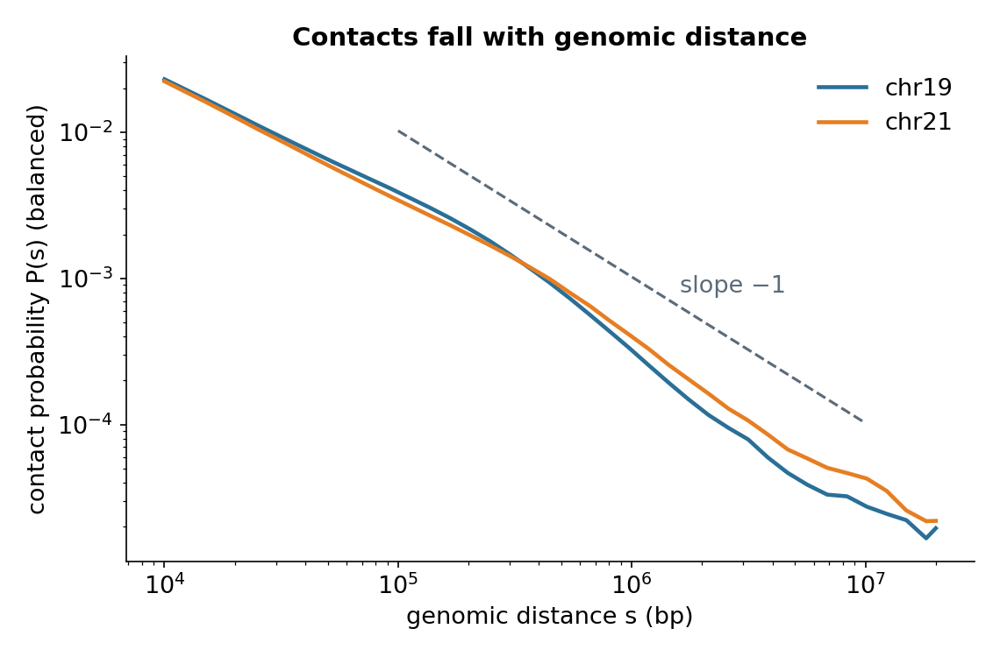
The contact probability P(s) falls roughly as a power law of genomic distance s: slope about −1 on a log–log plot between 100 kb and 1 Mb here (chr21: −0.97; chr19: −1.14).
This is the strongest signal in any Hi-C map. Everything else (domains, loops, compartments) is a deviation from this expectation.
A and B compartments
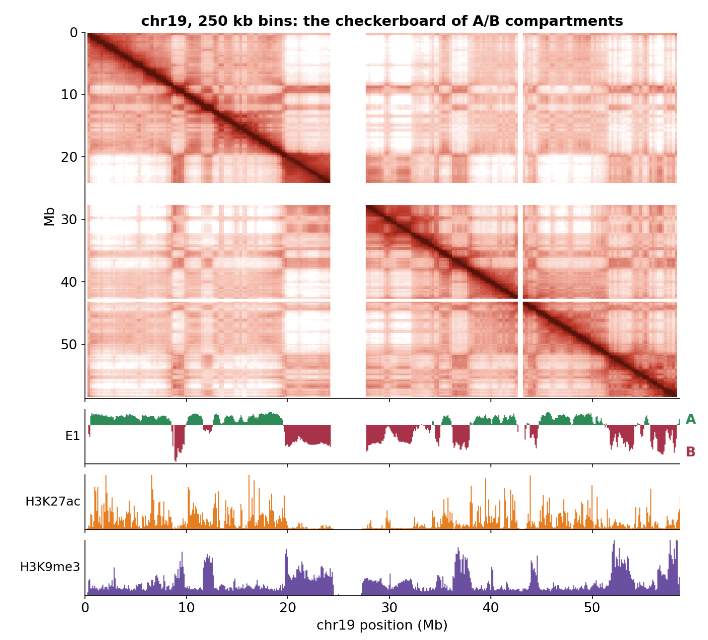
Far from the diagonal, the map is a checkerboard: bins fall into two types that contact their own type more.
The first eigenvector (E1) of the map’s correlation matrix splits the bins: A (E1 > 0) and B (E1 < 0).
A matches active chromatin: on chr19, E1 correlates with H3K27ac (r = 0.50) and against H3K9me3 (r = −0.64).
57% of chr19 is A: it is the most gene-dense human chromosome.
Where compartments sit in the nucleus
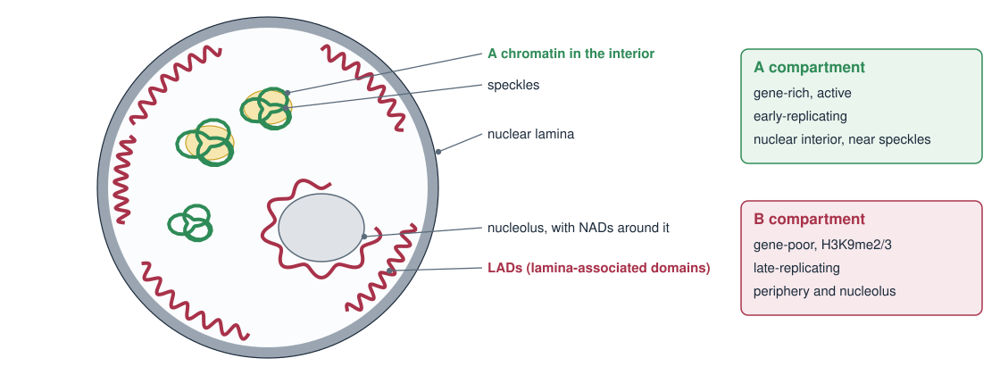
B chromatin lines the nuclear lamina (lamina-associated domains, LADs) and surrounds the nucleolus (NADs).
A chromatin fills the interior, near nuclear speckles (splicing-factor-rich bodies).
So compartments are a sequencing readout of nuclear position: the periphery is mostly a repressive environment.
Domains (TADs)
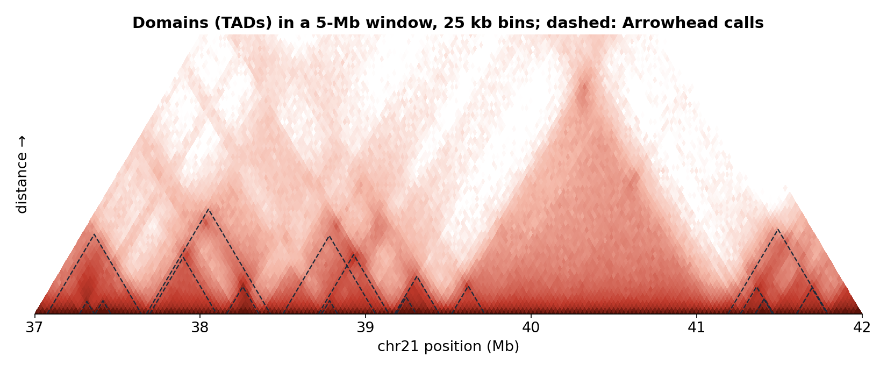
Domains are regions of about 0.1–1 Mb whose parts contact each other more than they contact the neighbouring regions: squares on the diagonal, triangles in this view.
Their edges, boundaries, are enriched for CTCF binding and active promoters.
16 domains called in this 5-Mb window of chr21 (Arrowhead, by ENCODE); 10 306 genome-wide, median size 185 kb.
Loops
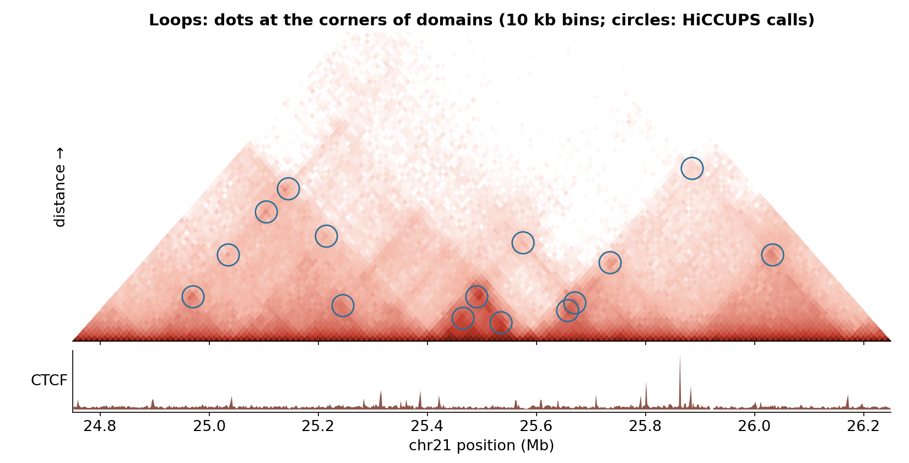
A loop is a dot: two loci (anchors) with more contacts than their neighbourhood. Most loop anchors in GM12878 carry a CTCF peak.
ENCODE’s HiCCUPS calls 14 599 loops in GM12878, 164 on chr21; median anchor distance 330 kb.
Loops at the corners of domains are the “loop domains”.
Loop extrusion
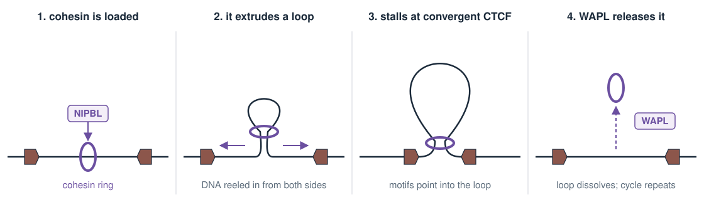
Cohesin, a ring-shaped SMC complex, is loaded onto DNA (with NIPBL) and extrudes a loop, reeling in DNA, using ATP.
It stops when it meets CTCF bound with its motif pointing into the loop. WAPL releases cohesin; the loop dissolves.
Loops are therefore dynamic: formed, held and released within minutes, over and over.
What extrusion leaves in a Hi-C map
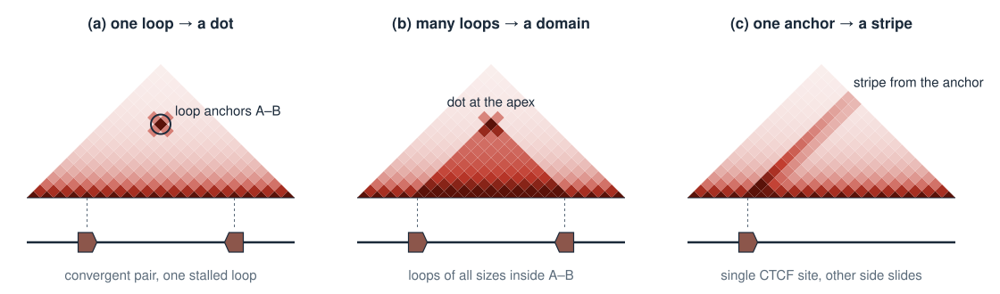
A dot: many cells have the same loop between two convergent CTCF sites.
A domain: extrusion in progress produces contacts at all distances between the two sites.
A stripe: one anchor holds while the other side keeps being reeled in.
Flip one CTCF site, move the loop
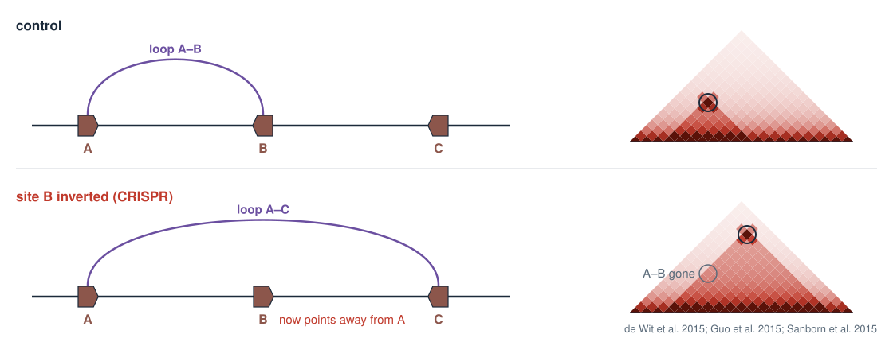
Inverting a single CTCF site with CRISPR loses the loop it anchored, and a new loop forms with the next site in the right orientation.
Deleting a site lets the domain merge with its neighbour.
Strong evidence that orientation, not only presence, of CTCF sites shapes the map.
Remove CTCF or cohesin
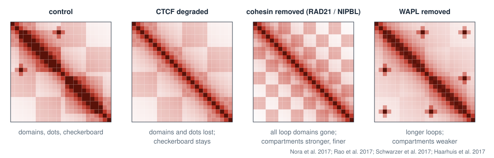
CTCF degraded (auxin degron, Nora et al. 2017): domain insulation and loops largely lost; compartments unchanged.
Cohesin removed (RAD21 degron, Rao et al. 2017; Nipbl deletion, Schwarzer et al. 2017): all loop domains vanish; compartments get stronger and finer.
Gene expression changes are surprisingly modest in the short term.
Two mechanisms, one map
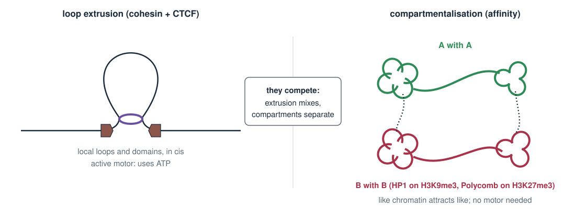
Extrusion (cohesin + CTCF) makes local loops and domains, in cis, with a motor.
Compartmentalisation separates chromatin types by affinity: like attracts like, for example HP1 bound to H3K9me3, Polycomb to H3K27me3.
They act at the same time and compete: extrusion mixes neighbouring A and B segments; affinity separates them.
One cell versus millions
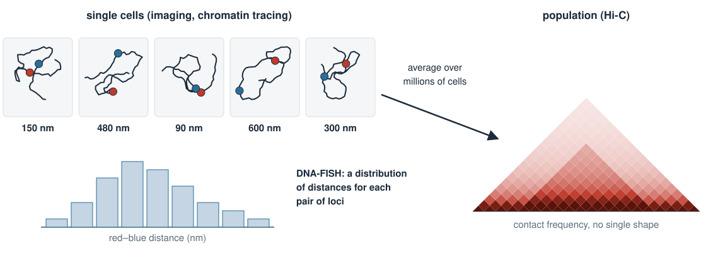
A Hi-C map is an average over millions of cells. In any one cell, two loci in the “same domain” may be far apart.
Imaging measures distances in single cells: DNA-FISH for a few loci, chromatin tracing (multiplexed FISH) for tens of loci along a region.
Single cells have domain-like globules with variable boundaries; CTCF sites make boundaries more likely, not certain.
Proximity ligation: the principle
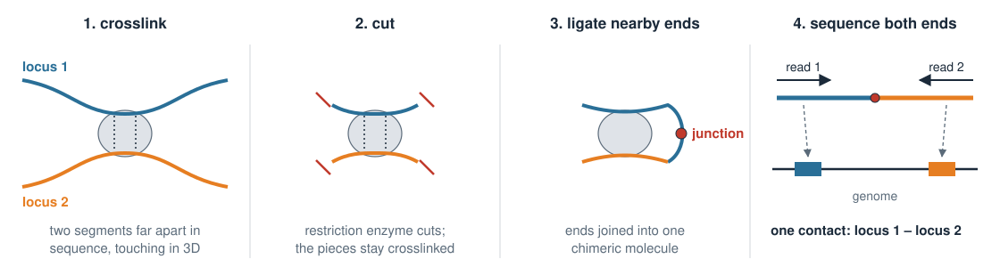
Crosslink chromatin with formaldehyde, cut the DNA, ligate ends that are held close together, and sequence the junctions.
Each sequenced junction is one contact between two genomic positions; counting them gives a contact map.
The chemistry has artefacts of its own (unligated ends, self-ligated fragments, PCR duplicates): the subject of Hi-C: from reads to contact matrices.
The 3C family
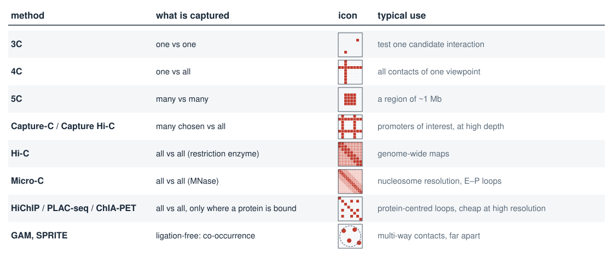
They differ in which ligation products are read: one pair (3C), one viewpoint against all (4C), a region (5C), everything (Hi-C, Micro-C), chosen baits (Capture-C), or only those near a protein (HiChIP, PLAC-seq, ChIA-PET).
Ligation-free methods (GAM, SPRITE) capture co-occurrence of many loci at once.
Does contact mean activation?
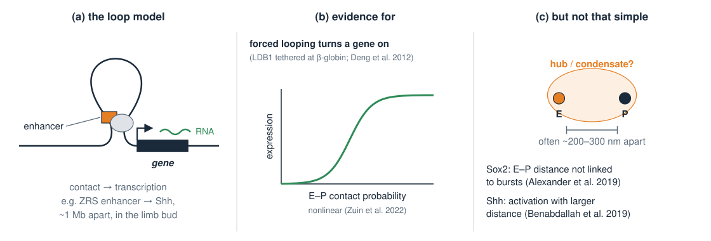
For: forcing a loop between an enhancer and a promoter can switch a gene on; expression rises nonlinearly with contact probability.
Not that simple: at Sox2 the enhancer–promoter distance does not track transcriptional bursts; at Shh activation came with a larger distance in one system.
Current view: proximity within a few hundred nm, perhaps in a hub of factors, rather than a stable direct touch.
How much do domains matter for genes?
Boundaries constrain enhancers: most enhancer–gene links found by CRISPR screens lie within the same domain, and insulation by CTCF lowers expression of genes across a boundary.
But redundancy is common: removing CTCF or cohesin changes few genes in the short term; in Drosophila, extensive rearrangements of domains on balancer chromosomes changed the expression of few genes.
Context matters: a domain change matters when it brings a strong enhancer to a gene that is ready to respond in the right tissue. That is the case in the disease examples that follow.
Broken boundaries cause limb malformations
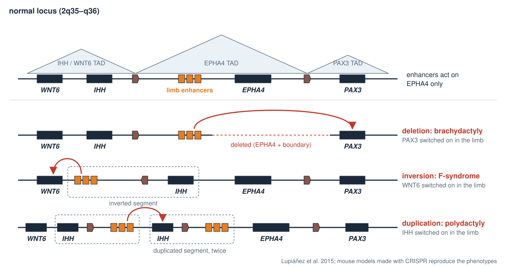
At the WNT6–IHH–EPHA4–PAX3 locus, limb enhancers normally act only on EPHA4 in their own domain.
Deletions, inversions and duplications that move a boundary let the enhancers reach PAX3, WNT6 or IHH: three different malformations (Lupiáñez et al. 2015).
The rewiring happened only when the variant crossed a CTCF-associated boundary; mice engineered with CRISPR reproduced it.
Boundary loss in cancer
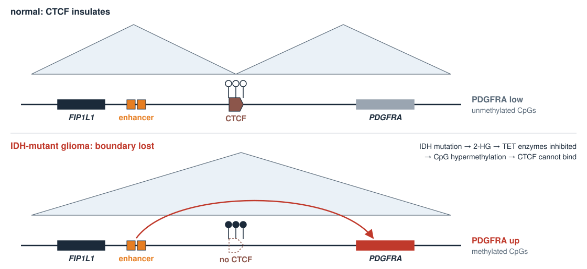
In IDH-mutant gliomas, the oncometabolite 2-hydroxyglutarate inhibits TET demethylases and CpG sites gain methylation, including in CTCF motifs.
CTCF cannot bind methylated sites: a boundary is lost and a constitutive enhancer activates the oncogene PDGFRA (Flavahan et al. 2016).
Microdeletions of boundaries next to proto-oncogenes are also found in T-ALL and other cancers (Hnisz et al. 2016).
Summary
level
size
made by
seen as
territory
a chromosome
—
blocks on the genome-wide diagonal
compartment A/B
~1–10 Mb
affinity of like chromatin (HP1, Polycomb, …)
checkerboard; sign of E1
domain (TAD)
~0.1–1 Mb
loop extrusion by cohesin, stopped by CTCF
squares / triangles
loop
10 kb–1 Mb
cohesin stalled at convergent CTCF sites
dots
CTCF loss: domains and loops go, compartments stay. Cohesin loss: all loop domains go, compartments get stronger.
A Hi-C map is an average over cells; single cells are variable. Contact is not the same as distance, nor as regulation.
Moving a boundary can rewire enhancers to new genes: limb malformations, cancer.
Key papers (optional further reading)
Not required reading and not examined. For those who want the primary literature.